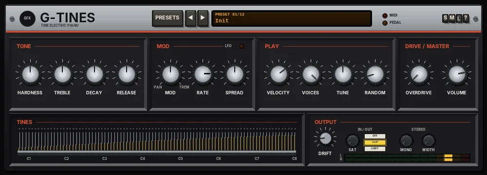

G Tines
A light, sample-free tine electric piano with hammer hardness, tremolo or auto-pan, and amp-style overdrive.

Overview
G Tines is a tine electric piano in the spirit of the classic stage and suitcase pianos of the 70s. There are no samples: every note is synthesised as it plays, and each voice is very light on the processor, so you can run several at once.
Each key is a small model of a tine and its tone bar: the long, woody fundamental, a bell-like overtone that rings out on a harder strike, a higher metallic edge that is gone in a few tens of milliseconds, and a low hammer thump (with a softer one when the damper lands). This passes through a model of the pickup, which growls and barks when you play hard and stays round and soft when you play gently. HARDNESS sets how hard the hammers are, and so how much bell and bark you get.
After the keys come a gentle fixed EQ (a little low body, a soft top), the TREBLE shelf, a tremolo or auto-pan, and an amp-style OVERDRIVE. It plays up to 32 notes, and responds to the sustain pedal (CC64), pitch bend (+/-2 semitones) and all-notes-off (CC120 / CC123).
Reach for it for
- Soul, jazz and ballad electric piano parts
- Bright, barking funk comping when you dig in
- The classic stereo auto-pan and suitcase tremolo sounds
- Driven, dirty keys through an amp-style overdrive
- Bell-like tines and dreamy, sustained pads
- A light e-piano that is easy on the processor
Loading and playing it
- Insert G Tines on a track (it is an instrument, so it needs no audio on the track).
- Arm the track for recording and set its input to your MIDI keyboard (or draw MIDI notes into an item on the track).
- Click the preset display and choose a preset, or step through them with ◄ and ►. The MIDI light flashes when notes arrive, and the PEDAL light shows when the sustain pedal is down.
- Play with velocity: soft notes are round and mellow, hard notes bring out the bell and the bark. G Tines listens on every MIDI channel.
Controls
The header
- PRESETS
- Opens the full preset list.
- ◄ / ►
- Step to the previous or next preset (wrapping round).
- Preset display
- Shows the preset number and name. Click it for the preset list too.
- MIDI
- Flashes when a note arrives.
- PEDAL
- Lights while the sustain pedal (CC64) is down.
- S / M / L
- Panel size: small, medium or large (a new instance opens Large). The panel also scales to fit the plugin window.
- ?
- Opens a pop-up with the design credit, the GFX website address and the address of this manual. Click anywhere to close it.
TONE
- HARDNESS
- How hard the hammers are, 0 - 100% (50% by default). Low settings give a soft, round, muffled tone; high settings add the bell-like ding, the metallic edge, a brighter tone and more growl from the pickup.
- TREBLE
- A high shelf at 2.5 kHz on the output, -12 to +12 dB (0 dB by default).
- DECAY
- How long the notes ring while held, 0 - 100% (50% by default). The value shows as a multiple of the natural decay, from x0.25 to x4. Bass notes always ring longer than treble notes.
- RELEASE
- How quickly the dampers stop a note when you let go, 0 - 100% (50% by default), shown as x0.20 to x5. Higher settings also make the damper's soft thump a little louder. The top keys (from C#7 up) have no dampers, as on the real thing, so they ring on.
MOD
The LFO light at the end of the title flashes at the LFO rate when MOD is in use.
- MOD
- A bipolar knob, -100 to +100% (OFF at the centre, the default). Turned right (TREM) it is a tremolo: the volume of both sides pulses together. Turned left (PAN) it is an auto-pan: the sound swings from side to side. The further from the centre, the deeper the effect.
- RATE
- The speed of the tremolo or auto-pan, 0.1 - 10 Hz (4.5 Hz by default).
- SPREAD
- Spreads the keys across the stereo field, bass to the left and treble to the right, 0 - 100% (50% by default). At 0% every key is in the centre.
PLAY
- VELOCITY
- Velocity sensitivity, 0 - 100% (70% by default). At 0% every note plays at full strength; at 100% there are about 27 dB between the softest and the hardest notes. Velocity also changes the tone: harder notes are brighter and bark more.
- VOICES
- How many notes can sound at once, 8 - 32 (32 by default). When they are all in use, the oldest released note is taken first, then the oldest note still held.
- TUNE
- Fine tuning, -50 to +50 cents (0 by default).
- RANDOM
- Gives every note a small random detune, 0 - 100% (10% by default). The value shows the range in cents, up to +/-20 cents at 100%. A little sounds like a real, slightly out-of-tune instrument; a lot sounds worn or lo-fi.
DRIVE / MASTER
- OVERDRIVE
- An amp-style soft clip, 0 - 100% (0% by default). It is lopsided, so it adds warm, even harmonics, and the level is matched so the sound gets dirtier rather than much louder.
- VOLUME
- Output level, -24 to +6 dB (0 dB by default).
TINES
A picture of the instrument's 88 tines, A0 to C8, each with its tone bar and pickup. A tine lights up and swings while its note sounds, so you can see how long notes ring and how many are playing.
OUTPUT
- DRIFT
- 0 - 100% (15% by default), kept subtle: each note gets a tiny random tuning offset, the overall pitch wanders very slowly (up to +/-20 cents at 100%), and the tone and the LFO rate wander a little. At 0% everything stays exact.
- SAT (IN / OUT)
- Band saturation on the way out: only the lows and highs are saturated (the mids stay clean), with a soft curve that loosens as the level rises. 0% by default.
- OFF / CLIP / LIMIT (IN / OUT)
- The final stage: nothing, a soft clipper at -0.3 dBFS (no latency, the default), or a lookahead limiter that holds the peaks at -0.3 dBFS (3 ms latency, compensated by REAPER). While the output clips, the CLIP key flashes red.
- MONO (STEREO)
- Makes everything below the set frequency mono, 20 - 500 Hz (fully left = OFF, the default). Use it to keep the low end centred.
- WIDTH (STEREO)
- Widens the stereo image above the MONO frequency, from +0% (the default) up to +100% (twice the side signal).
- L / R meters
- The output level, left and right.
A gentle leveller sits inside the instrument, so big chords played hard stay under the output stage instead of slamming it.
Knobs: drag up or down (Shift for fine moves) or use the mouse wheel; double-click to reset a knob to its default.
MIDI
- Notes
- The whole keyboard, with velocity. A note played again while it is still ringing re-strikes the same tine.
- Sustain pedal (CC64)
- Holds the dampers off while it is down.
- Pitch bend
- +/-2 semitones.
- All notes off (CC120 / CC123)
- Damps every note and releases the pedal.
G Tines plays on every MIDI channel. Incoming MIDI is passed on down the chain.
Presets
Presets set the TONE, MOD and PLAY controls and OVERDRIVE. DRIFT, VOLUME and the OUTPUT section are left as they are.
- Init
- The default piano: medium hardness, flat treble, no modulation.
- Classic Stage
- A little harder and brighter, a slightly longer decay and a touch of overdrive.
- Bright Bark
- Very hard hammers, +4.5 dB treble, high velocity sense and some overdrive: bites and barks when you dig in.
- Soft Ballad
- Soft hammers, rolled-off treble and a longer decay and release, with gentler velocity.
- Tremolo Suitcase
- A stage tone with a deep 5.2 Hz tremolo and a little drive.
- Wide Auto-Pan
- A deep, slow (3.2 Hz) auto-pan with wide key spread.
- Dirty Overdrive
- Hard hammers with heavy overdrive, a fast light tremolo and more random detune.
- Mellow Jazz
- Soft hammers, -5 dB treble and a narrow spread, for warm, round comping.
- Bell Tine
- The hardest hammers, +6 dB treble and long decay and release, with a gentle slow auto-pan: glassy and bell-like.
- Funk Bite
- Hard hammers, very short decay and release, high velocity sense and some drive, with 16 voices: tight and percussive.
- Lo-Fi Dusty
- Dark treble, tuned 8 cents flat with lots of random detune, tremolo and some drive, with 16 voices: a worn old instrument.
- Dream Pad
- Soft hammers, the longest decay and release, a slow, wide auto-pan and full spread: a floating, sustained wash.
Tips
- Set HARDNESS and VELOCITY together: high hardness with high velocity sense gives a piano that is mellow when you play softly and barks when you dig in.
- For the classic stereo auto-pan, turn MOD left to about -60 to -80% and RATE to around 3 - 5 Hz.
- Use TREBLE to fit the piano to the mix rather than lowering HARDNESS, which changes the character of the attack too.
- OVERDRIVE is level matched: judge it by feel, then trim VOLUME.
- Lower VOICES (or shorten RELEASE) if a sustained part gets muddy; the oldest released notes are stolen first.
- Your edits stay until you choose another preset. To keep an edited sound, save it as a REAPER preset (the + button at the top of the plugin window).
File: gfx-g-tines.jsfx